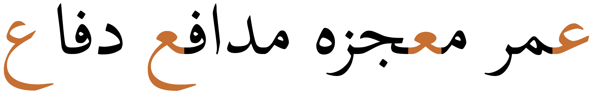

This page brings together basic information about the Arabic script and its use for the Pashto language. It aims to provide a brief, descriptive summary of the modern, printed orthography and typographic features, and to advise how to write Pashto using Unicode. The Pashto orthography is standardised slightly differently by Afghan and Peshawar authorities, but with only a small number of divergences; we treat both here and indicate differences.
Select part of this sample text to show a list of characters, with links to more details.
Change size: 28px
د بشر ټول افراد ازاد نړۍ ته راځي او د حيثيت او د حقوقو له پلوه سره برابر دي۔ ټول د عقل او وجدان خاوندان دي او بايد يو له بل سره د ورورۍ په روحيه سره چلنند کړي۔
هر څوک کولے شي، پرته له هر ډول تبعيض څخه په تيره بيا د نژاد، رنګ، جنس، ژبه، مذهب، سياسي عقيدې او يا هره بله عقيده چې وي۔ او هم دا رنګه د قوم، ټولنيزې وضعې، زيږيدنه او يا هر بل موقعيت چې وي، د ټولو هغو حقوقو او ازاديو څخه چې په دغه اعلاميه کښې ذکر شوي دي ، ګټه واخلي۔
Pashto, also known as Pushto, is an Eastern Iranian language spoken natively in northwestern Pakistan, southern and eastern Afghanistan, and some isolated pockets of far eastern Iran near the Afghan border. Overall, the total number of Pashto speakers is at least 40 million, with some estimates suggesting it could be as high as 60 million. The Pashto alphabet is widely used for writing the Pashto language in Pakistan and Afghanistan. It serves as the primary script for official documents, literature, and communication among Pashto speakers. Additionally, it plays a crucial role in preserving Pashto cultural heritage and identity.
پښتوالفبې pəx̌tó alfbâyePashto alphabet
The Pashto orthography is based on the Perso-Arabic script and has a long tradition. It is primarily used for writing the Pashto language in Pakistan and Afghanistan. The script originated in the 16th century through the works of Pir Roshan.
The Arabic script is an abjad, ie. short vowels are not normally written. See the table to the right for a brief overview of features for the Pashto language.
The Pashto Arabic orthography is derived from the Arabic/Persian abjads, where in normal use the script represents long vowel sounds using matres lectionis. However, the script has been adapted in this orthography in order to cope with the many more vowels sounds in Pashto; there are many unique letters, and the use of letters for vowels is a distinguisher of vowel quality, rather than length.
Pashto text runs right to left in horizontal lines, but numbers and embedded Latin text are read left-to-right. There is no case distinction. Words are separated by spaces, but in Pakistan component words in compounds may be joined without a space but keep word-final letter shapes intact.
The Pashto orthography is standardised slightly differently by Afghan and Peshawar authorities, with some differences in code point use.
This page lists 32 basic consonant letters for Pashto. An additional 8 consonants are used for loan words whose spelling hasn't been assimilated into the basic Pashto letters; they introduce no new consonant sounds.
Consonant clusters are not normally marked in any way, although there is a diacritic that is sometimes used in vowelled text.
The Pashto abjad indicates the location of 7 plain vowel sounds using 6 letters, however 2 of those only occur in word-final position, and the remainder also function as consonants, so there is a good deal of ambiguity when reading unvowelled text.
When needed, vowels can be unambiguously represented using the letters and 5 combining marks. This includes a dedicated diacritic to represent ə, 0659, which is unusual, although it is rarely used. Post-consonant vowel sounds are written using the same code points, regardless of the position within a word.
Additional, special letters are used for word-final diphthongs, which usually have grammatical functions as well as representing sounds.
Word-initial standalone vowels are all preceded by or attached to ا.
Nasalisation can be indicated using ں, but that is limited to a particular dialect.
The following represents the repertoire of the Pashto language.
Click on the sounds to reveal locations in this document where they are mentioned.
Phones in a lighter colour are non-native or allophones. Source Wikipedia.
Vowel sounds
Plain vowels
Consonant sounds
labial
labio- dental
alveolar
post-
alveolar
retroflex
palatal
velar
uvular
glottal
stop
pb
td
ʈɖ
kɡ
q
affricates
t͡sd͡z
t͡ʃd͡ʒ
fricative
f
sz
ʃʒ
ʂʐ
xɣ
h
nasal
m
n
ɳ
ŋ
approximant, trill, flap
w
rl
ɽ𝼈
j
𝼈 is an allophone of ɽ that appears at the beginning of a syllable or other prosodic unit.wpsl,#Phonology
Tone
Pashto is not a tonal language.
Structure
Pashto words have one of 3 types of stress – strong, medium, and weak – but stress is not shown in the orthography, even though it is sometimes phonemically distinctive. It also plays a morphological role, particularly in distinguishing verbal forms. It can occur on any syllable, but particularly in first, last, or penultimate syllables.bc,#Pashto, Phonology
Pashto is somewhat unusual in Iranian languages in that there are many words with consonant clusters in syllable onsets. These are usually 2 consonant clusters, but some 3 consonants are also found.bc,#Pashto, Phonology
سخی
Vowels
Vowel summary table
The following table summarises the main vowel to character assignments.
Vowel diacritics are shown in this table; in normal text these diacritics do not appear. The hyphens on the IPA show whether this is an initial (-x), medial (-x-), or final (x-) form. Forms that are not shown don't occur. A P below a character indicates that this is per the Pakistani orthography.
The Pashto abjad indicates the location of 7 plain vowel sounds using 6 letters, however 2 of those only occur in word-final position, and the remainder also function as consonants, so there is a good deal of ambiguity when reading unvowelled text.
When needed, vowels can be unambiguously represented using the letters and 5 combining marks. This includes a dedicated diacritic to represent ə, 0659, which is unusual, although it is rarely used. Post-consonant vowel sounds are written using the same code points, regardless of the position within a word.
Additional, special letters are used for word-final diphthongs, which usually have grammatical functions as well as representing sounds.
Plain vowels
After a consonant, Pashto represents vowel sounds using the following consonant letters.
ي␣و␣ې␣ۀ␣ه␣ا
The vowels i, u are written using the consonants ي and و, respectively, as matres lectionis. As consonants they represent j and w, and it can often be difficult to know whether these letters represent consonants or vowels.
موسيقي
The sound o is also represented by و, and the pronunciation of words containing that letter brings additional ambiguity. For example, compare:
سوړ
سور
سوۍ
The sound e is written ې. It is unambiguous, and can occur in any position in a word.
رېبز
The sound ə is only ever written at the end of a word, although it occurs frequently in word-medial position. At the end of a word it is represented by ۀ in Peshawar, or ه elsewhere (which represents the consonant h when not word-final).
برغټ
مېړۀ
شپېته
When it appears in word-final position and doesn't represent ə (ie. always, in Peshawar), ه (without the hamza) is pronounced a.
بکاڼه
In normal Pashto text, the sound a is also not written in word-medial position, and so cannot be distinguished from the sound ə.
When ا appears in word-medial or word-final position it always represents ɑ. (As a word-initial standalone vowel, however, it can represent several sounds.)
Combining marks used for vowels
MacKenzie & David introduce a distinction between the writing of long vowels, using letters, and short vowels, normally unwritten in word-medial position, but that can be written using diacritics. They describe how, in the Pashto phonology, this length distinction is questionable, and length tends to vary phonetically with position and stress.bc,#Pashto>Phonology
Where needed, however, either to disambiguate homographs or simply to clarify vowel pronunciations, vowel sounds can be indicated using one of the following diacritics.
َ␣ُ␣ِ␣ٙ␣ً
As shown in the basicV section above, most of these diacritics have the standard Arabic use, but Pashto has an additional diacritic, ٙ, which is not found in Arabic or Persian. It represents the sound ə.
ً is only used for occasional spellings of Arabic loan words.
The following 2 additional combining marks can be found in decomposed text (only).
ٓ␣ٔ
Diphthongs
Word-initial or -medial diphthongs ɑi̯ and aw are written using ي and و, respectively.
بايلل
اورول
It can be difficult to tell by looking whether these characters represent a semivowel at the end of a diphthong, or a syllable onset consonant.
Diphthongs are common in word-final position, where they can be written in ways indicated by the following list.
وی␣ئ␣ۍ␣ی␣ای
A diphthong like ui̯ is written using the normal vowel for u followed by ی. (Note that this is not the letter ي.) MacKenzie & David list another diphthong, ei̯, which is presumably created in the same way.
دوی
ځای
لوی
In Pakistan writers typically use ے for -i̯ when word-final.
ځاے
لوے
There are 3 more ways of writing diphthongs that are only found in word-final position. These also represent grammatical endings.
ی on its own is pronounced ai̯.
زمری
بييی
The other diphthongs are both pronounced əi̯ but signal different grammatical meanings. ۍ is used with nouns, indicating that the noun is feminine, whereas ئ is used with verbs, indicating that the verb is in second person plural form.wpsa
هګۍ
يئ
Nasalisation
ں
Vowel nasalisation is not normally marked in Pashto text, but in certain dialects such as Banisi/Banuchi and Waṇetsi it is represented using ں.
بويں
Standalone vowels
Word-initial standalone vowels in Pashto begin with the vowel carrier ا.
اي␣ا␣او␣ا␣اې␣او␣ا␣آ
Vowels that are only distinguished by diacritics are not distinguished in normal text, and there is a great deal of phonological ambiguity in these spellings. Examples follow:
ايغلو
اصلاح
اومامي
اېموجي
اوبدل
افغان
آره
Vowel absence
Pashto doesn't normally use any mark to indicate a consonant cluster or consonant without a following vowel. A cluster is simply written as a sequence of consonants.
ږمنځ
بړستن
Vowelled text may use ْ, but it is rare.
ْ
Vowel sounds to characters
This section maps Pashto vowel sounds to common graphemes in the Arabic orthography.
The left column shows dependent vowels, and the right column independent vowel letters.
Click on a grapheme to find other mentions on this page (links appear at the bottom of the page). Click on the character name to see examples and for detailed descriptions of the character(s) shown.
Plain vowels
Post-consonant
Word-initial standalone
i
ييييwhen spelled as a 'long' vowel.
موسيقي
اي
ايغلو
ِin vowelled text only, when spelled as a 'short' vowel.
معجزه
ا
اسلام
u
ووwhen spelled as a 'long' vowel.
ايغلو
او
اومامي
ُin vowelled text only, when spelled as a 'short' vowel.
معجزه
ا
اومامي
e
ې06D006D006D0
تېروتل
اې
اېموجي
o
وو
لامبو
او
اوبدل
ə
Not written in normal text.
ځنګل
ٙin vowelled text only, and rare.
ځنګل
a
Not written in normal text.
برابر
ا
ابادول
َin vowelled text.
بَرابَر
ههin word-final position.
مننه
ًin unassimilated Arabic loan words.
ɑ
اا
ښامار
آ
آره
ععععin unassimilated Arabic loans.
دعوه
Diphthongs
-əi
ۍۍword-final only, has grammatical meaning.
نړۍ
ئئword-final only, has a different grammatical meaning.
وئ
ɑi̯
ييييwhen following a vowel sound.
بايلل
aw
ووwhen following a vowel sound.
اورول
-ai
ییin Afghanistan, when following a consonant. Only occurs in word-final position.
سړی
ےےin Peshawar, when following a consonant. Only occurs in word-final position.
سړے
-i̯/-j
ییin Afghanistan when word-final and preceded by a vowel.
لوی
ےےin Peshawar when word-final and preceded by a vowel.
لوے
Consonants
Consonant summary table
The following table summarises the main consonant to character assigments.
There is significant regional variation in the pronunciation of 2 consonant letters in particular. ږ is pronounced ʐ in southern regions, ʝ in the northwest, and ɡ in the northeast. ښ is pronounced ʂ in the south, ç in the northwest, and x in the northeast.
The sound ɡ has 2 allographs. In Pakistan the preferred code point is ګ, whereas the Afghan preference is for گ.
ف is sometimes replaced with پ.
Wikipedia lists a number of common differences between spelling and punctuation or between the spellings of Afghan and Peshawar orthographies. See Orthography differences in Wikipedia for more details.
Unassimilated spellings
Eight more consonant letters are hangovers from the original spellings of loan words whose spellings have not been assimilated into the Pashto alphabet. They don't represent any new sounds.
ط␣ص␣ث␣ذ␣ظ␣ض␣ح␣ع
Sometimes ك may be used for k, but ک should be used instead.
Consonant clusters
No special mechanisms are used to indicate consonant clusters. These are simply written as a sequence of characters.
آيرلنډ
اېسټوني
Consonant sounds to characters
This section maps Pashto consonant sounds to common graphemes in the Arabic orthography. Sounds listed as 'infrequent' are allophones, or sounds used for foreign words, etc.
The right-hand column shows the various joining forms.
Click on a grapheme to find other mentions on this page (links appear at the bottom of the page). Click on the character name to see examples and for detailed descriptions of the character(s) shown.
Joining forms
p
پ
پښتنه
067E067E067E⏴
b
ب
برابر
062806280628⏴
t
ت
توت
062A062A062A⏴
طin loan words with unassimilated spelling.
طالب
063706370637⏴
d
د
دروند
062F062F⏴
ʈ
ټ
ټماټر
067C067C067C⏴
ɖ
ډ
ډنډ
06890689⏴
k
ک
کلک
06A906A906A9⏴
ɡ
گAfgan preferred form.
مگر
06AF06AF06AF⏴
ګPeshawar preferred form.
ګبين
06AB06AB06AB⏴
q
ق
فقط
064206420642⏴
ʔ
عin unassimilated loan words, but often silent.
معجزه
063906390639⏴
t͡s
څ
څنګ
068506850685⏴
d͡z
ځ
ځنګل
068106810681⏴
t͡ʃ
چ
چيچل
068606860686⏴
d͡ʒ
ج
جکړ
062C062C062C⏴
f
ف
فرانس
064106410641⏴
s
س
سنډا
063306330633⏴
ث
ثانيه
062B062B062B⏴
ص
صفحه
063506350635⏴
z
ز
زمری
06320632⏴
ذin loan words with unassimilated spelling.
ذکر
06300630⏴
ضin loan words with unassimilated spelling.
حضرت
063606360636⏴
ظin loan words with unassimilated spelling.
تلفظ
063806380638⏴
ʃ
ش
شپېته
063406340634⏴
ʒ
ژ
ژېړ
06980698⏴
ʂ
ښin Kandahar.
ښامار
069A069A069A⏴
ʐ
ږin Kandahar.
ږيره
06960696⏴
x
خ
ختل
062E062E062E⏴
ɣ
غ
غنم
063A063A063A⏴
h
ه
هلک
06470647⏴
حin loan words with unassimilated spelling.
رحم
062D062D062D⏴
m
م
مېلمه
064506450645⏴
n
ن
نيوکه
064606460646⏴
ɳ
ڼ
ګڼل
06BC06BC06BC⏴
w
و
لېوۀ
06480648⏴
r
ر
رسنۍ
06310631⏴
ɽ
ړ
ړوند
06930693⏴
l
ل
لس
064406440644⏴
j
ي
يونی
064A064A064A⏴
-j
یin Afghanistan when word-final and preceded by a vowel.
لوی
06CC06CC⏴
ےin Peshawar when word-final and preceded by a vowel/
لوے
06D206D2⏴
Encoding choices
This section offers advice about characters or character sequences to avoid, and what to use instead. It takes into account the relevance of Unicode Normalisation Form D (NFD) and Unicode Normalisation Form C (NFC)..
Although usage is recommended here, content authors may well be unaware of such recommendations. Therefore, applications should look out for the non-recommended approach and treat it the same as the recommended approach wherever possible.
Questions
ی appears in word-medial position in a few words in Wiktionary, but these all appear to be incorrectly encoded. If you look the word up in the Pashto Dictionary they use ARABIC YEH.
Canonically equivalent encodings
Two letters can be represented as an atomic character (the norm), or as a sequence of base letter plus combining mark. The parts are separated in Unicode Normalisation Form D (NFD), and recomposed in Unicode Normalisation Form C (NFC), so both approaches should be treated as canonically equivalent.
Atomic (recommended)
Decomposed ( NOT recommended )
آ
0627 0653
ئ
064A 0654
Normally, text will use the atomic form, and this is generally recommended by the Unicode Standard.
The decomposition of ۀ is a little unusual. Instead of decomposing to هٔ it decomposes to 06D5 0654, which includes a code point for HEH that is not used otherwise in Pashto.
Atomic (recommended)
Decomposed ( NOT recommended )
ۀ
06D5 0654
Confusables & spelling errors
This table lists characters that are often mistakenly used because they look the same as or similar to the code points used for Pashto, or perhaps because the correct character is not available on the user's keyboard.
There appears to be a significant amount of confusion as to when to use ي word-medially and when to use ی. In Wiktionary it is fairly common to see the vowel i represented by the latter when word-medial. If you look the word up in the Pashto Dictionary, however, those words use the former. Applications doing search or collation operations will need to make appropriate allowances.
Vowel i
Word-final diphthongs
Notes
064A
06CC
The Farsi YEH drops the dots below in isolate and final positions.
Similarly, ك can often be found in Pashto texts, but the Pashto standards recommend using ک instead.
Recommended
Not recommended
Notes
ک
ك
Final and isolate forms of ARABIC KAF have an additional diacritic that doesn't occur with KEHEH.
Codepoint sequences
Combining marks always follow the base character.
Numbers
Digits
Pashto uses the set of native digits in the Unicode Arabic block known as Eastern Arabic-Indic digits.
۰␣۱␣۲␣۳␣۴␣۵␣۶␣۷␣۸␣۹
Wikipedia uses ٬ as a thousands separator.
Text direction
Arabic script text is written horizontally and right-to-left in the main but, as in most right-to-left scripts, numbers and embedded text in other scripts are written left-to-right (producing 'bidirectional' text).
Arabic language words in this example are read right-to-left, starting from the right of this line, but numbers and Latin text (highlighted) are read left-to-right.
The Unicode Bidirectional Algorithm automatically takes care of the ordering for all the text in fig_bidi, as long as the 'base direction' is set to RTL. In HTML this can be set using the dir attribute, or in plain text using formatting controls.
If the base direction is not set appropriately, the directional runs will be ordered incorrectly as shown in fig_bidi_no_base_direction, making it very difficult to get the meaning.
The exact same sequence of characters in Arabic language text with the base direction set to RTL (top), and with no base direction set on this LTR page (bottom). Certain items are highlighted to help track their position.
For authoring HTML pages, one of the most important things to remember is to use <html dir="rtl" … > at the top of the page. Also, use markup to manage direction, and do not use CSS styling.
Managing text direction
Unicode provides a set of 10 formatting characters that can be used to control the direction of text when displayed. These characters have no visual form in the rendered text, however text editing applications may have a way to show their location.
202B (RLE), 202A (LRE), and 202C (PDF) are in widespread use to set the base direction of a range of characters. RLE/LRE comes at the start, and PDF at the end of a range of characters for which the base direction is to be set.
In Unicode 6.1, the Unicode Standard added a set of characters which do the same thing but also isolate the content from surrounding characters, in order to avoid spillover effects. They are 2067 (RLI), 2066 (LRI), and 2066 (PDI). The Unicode Standard recommends that these be used instead.
There is also 2068 (FSI), used initially to set the base direction according to the first recognised strongly-directional character.
061C (ALM) is used to produce correct sequencing of numeric data. Follow the link and see expressions for details.
200F (RLM) and 200E (LRM) are invisible characters with strong directional properties that are also sometimes used to produce the correct ordering of text.
Sequences of numbers are sets of numbers separated by punctuation or spaces, such as 10–12–2022. Sequences of digits, such as 123, in Arabic script text run LTR automatically. Expressions and sequences of numbers follow somewhat complicated rules, which are described in the Arabic language orthography notes.
Arabic script is always cursive, ie. letters in a word are joined up. Fonts need to produce the appropriate joining form for a letter, according to its visual context, but the code point used doesn't change. This results in four different shapes for most letters (including an isolated shape). Ligated forms also join with characters alongside them.
The highlights in the example below show the same letter, ع, with four different joining forms.

The letter ع in 4 different joining contexts.
Most Arabic script letters join on both sides. A few only join on the right-hand side.
Cursive joining forms
Most dual-joining characters add or become a swash when they don't join to the left. A number of characters, however, undergo additional shape changes across the joining forms. fig_joining_forms and fig_right_joining_forms show the basic shapes in Pashto and what their joining forms look like.
isolated
right-joined
dual-join
left-joined
Pashto letters
ب
ـب
ـبـ
بـ
پ␣ت␣ټ␣ب␣ث
ن
ـن
ـنـ
نـ
ن␣ڼ␣ں
ق
ـق
ـقـ
قـ
ق
ف
ـف
ـفـ
فـ
ف
س
ـس
ـسـ
سـ
س␣ښ␣ش
ص
ـص
ـصـ
صـ
ص␣ض
ط
ـط
ـطـ
طـ
ط␣ظ
ک
ـک
ـکـ
کـ
ک␣ګ␣گ
ل
ـل
ـلـ
لـ
ل
ه
ـه
ـهـ
هـ
ه
م
ـم
ـمـ
مـ
م
ع
ـع
ـعـ
عـ
ع␣غ
ح
ـح
ـحـ
حـ
څ␣ځ␣چ␣ج␣خ␣ح
ي
ـي
ـيـ
يـ
ي␣ې␣ی␣ئ
Joining forms for shapes that join on both sides..
isolated
right-joined
MSA letters
ا
ـا
ا
ر
ـر
ز␣ږ␣ژ␣ر␣ړ
د
ـد
د␣ډ␣ذ
و
ـو
و
ۀ
ـۀ
ۀ
ۍ
ـۍ
ۍ
Joining forms for shapes that join on the right only.
Cursive breaks within words
Whereas compound nouns are written as single words in the Afghan spelling, in Peshawar the words making up the compound are not joined, but nor is there a space between them.wpsa,#Orthography_differences
The following examples show that the division can be marked in the Peshawar orthography in different ways. In each case, the first example shows the Afghan spelling, the second that of Peshawar.
Click on the examples to see the components.
by using a word-final vowel code point that doesn't join to the left.
برياليتوب
بریالےتوب
by not removing a non-connecting word-final letter.
زړور
زړۀور
by inserting 200C (see the next section).
لاسلیک
لاسلیک
The ZWNJ formatting character should be ignored when comparing strings. The need for this is clear, given that Afghan spelling generally doesn't use it – although some additional tweaks to the collation algorithm are also needed to deal with situations where compound nouns don't use ZWNJ.
Managing glyph shaping
200D (ZWJ) and 200C (ZWNJ) are used to control the joining behaviour of cursive glyphs. They are particularly useful in educational contexts, but also have real world applications.
ZWJ permits a letter to form a cursive connection without a visible neighbour. For example, the marker for hijri dates in Arabic is an initial form of heh, even though it doesn't join to the left, ie. ه. For this, use ZWJ immediately after the heh, eg. الاثنين 10 رجب 1415 ه..
ZWNJ prevents two adjacent letters forming a cursive connection with each other when rendered. An example of its use for Pashto is given just above. (It is also used in other orthographies, such as in Persian for plural suffixes and some proper names, for Ottoman Turkish vowels and for Kashmiri palatalisation in compound nouns.)
034F is used in Arabic to produce special ordering of diacritics. The name is a misnomer, as it is generally used to break the normal sequence of diacritics.
Context-based shaping & positioning
In addition to the cursive shaping, Arabic script glyphs also require context-dependent shaping and positioning. For more information, see the Arabic language orthography notes.
The usual mandatory ligature applies for لا.
لامبو
اسلام
Typographic units
Word boundaries
Words are separated by spaces.
As described in cursivebreaks, compound nouns in the Peshawar orthography tend to be two words with word-final shaping intact, but rammed together with no space between.
لاسلیک
Graphemes
tbd
Phrase, sentence, and section delimiters are described in phrase.
Pashto commonly uses ASCII parentheses to insert parenthetical information into text.
start
end
standard
(
)
Mirrored characters
The words 'left' and 'right' in the Unicode names for parentheses, brackets, and other paired characters should be ignored. LEFT should be read as if it said START, and RIGHT as END. The direction in which the glyphs point will be automatically determined according to the base direction of the text.
Both of these lines use >U+003E GREATER-THAN SIGN, but the direction it faces depends on the base direction at the point of display.
The number of characters that are mirrored in this way is around 550, most of which are mathematical symbols. Some are single characters, rather than pairs. The following are some of the more common ones.
The following types of quotation mark can be found in Pashto texts. (Of course, depending on ease of input, quotations may also be surrounded by ASCII double and single quote marks.)
start
end
”
“
’
‘
«
»
Unlike brackets, the first two sets of quote marks are notmirrored during display. As a result, LEFT means use on the left, and RIGHT means use on the right.
Line & paragraph layout
Line breaking & hyphenation
Lines are generally broken between words. They are not broken at the small gaps that appear where a character doesn't join on the left.
Line-edge rules
As in almost all writing systems, certain punctuation characters should not appear at the end or the start of a line. The Unicode line-break properties help applications decide whether a character should appear at the start or end of a line.
The following list gives examples of typical behaviours for characters affected by these rules. Context may affect the behaviour of some of these and other characters.
« “ ‘ ( should not be the last character on a line
» ” ’ ) . ، ؛ ؟ ! should not begin a new line
Breaking between Latin words
When a line break occurs in the middle of an embedded left-to-right sequence, the items in that sequence need to be rearranged visually so that it isn't necessary to read lines upwards.
latin-line-breaks shows how two Latin words are apparently reordered in the flow of text to accommodate this rule. Of course, the rearragement is only that of the visual glyphs: nothing affects the order of the characters in memory.
In this Arabic language text, the lower of these two images shows the result of decreasing the line width, so that text wraps between a sequence of Latin words.
Page & book layout
General page layout & progression
Pashto books, magazines, etc., are bound on the right-hand side, and pages progress from right to left.
Binding configuration for Pashto books, magazines, etc.
Columns are vertical but run right-to-left across the page.